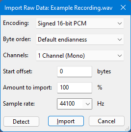
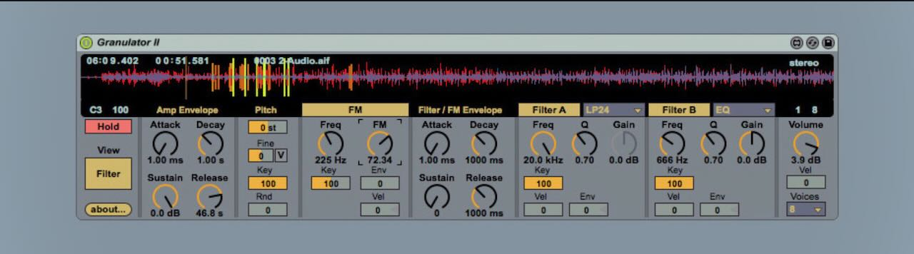
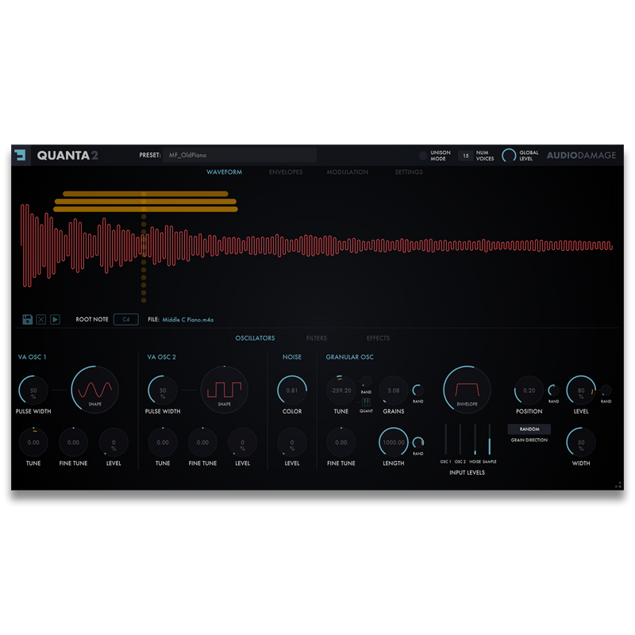

Relatório de apoio para apresentação. Trabalho de Graduação, ADS, 5º semestre. Outubro de 2026.
Databending é a leitura de um arquivo não sonoro como se fosse áudio. O Audacity oferece essa operação pelo diálogo de importação de dados brutos, em que o usuário define codificação, canais e taxa (Figura 1). O procedimento é offline e sem tratamento: bytes executáveis não têm média zero, cabeçalhos geram cliques e variações rápidas produzem aliasing. Um parser sem verificação de limites ainda pode ler fora do arquivo e derrubar a sessão.

Granulator II, de Robert Henke, é a referência artística de síntese granular: fluxo constante de grãos com posição, tamanho e afinação moduláveis, além de filtros em série (Figura 2). Opera apenas sobre samples, dentro do Ableton Live com Max for Live.

Quanta 2, da Audio Damage, é o granular comercial multiformato (VST3, AU, AAX e CLAP para desktop, com versão iOS), voltado a performance com samples tradicionais (Figura 3). Também não lê binários nem calcula entropia.

O diferencial do Opcoda está na combinação ausente nos três: parser PE seguro com verificação de limites, entropia de Shannon como modulação e motor granular em tempo real rígido. A estrutura lida segue a especificação PE/COFF da Microsoft (DOS Header, assinatura PE, COFF, Optional Header, tabela de seções e seções como .text, .data e .rsrc).
O pipeline tem quatro blocos: Parser isolado na UI thread, fila SPSC lock-free, motor granular de 8 vozes na thread de áudio e saída com DC-blocker e limiter (Figura 4). O diagrama BPMN completo está em docs/opcoda-fluxo.bpmn.
Auditoria WCAG 2.2 nível AA pelo método WCAG-EM. Nos documentos, links genéricos foram corrigidos para texto descritivo (critério 2.4.4) e a tabela do cronograma usa cabeçalho (1.3.1). Na interface, os critérios de aceite cobrem teclado total, foco visível, nomes acessíveis nos knobs, contraste de 4.5:1 e erro do parser em texto com código, nunca só por cor. O MIDI learn funciona como via acessível sem mouse. Reauditoria ao fim da etapa E4.
| Item | Meta do MVP (03/11) |
|---|---|
| Formatos | Standalone e VST3 x64 |
| Entrada | Arrasto de .exe com som em menos de 2 s |
| Condicionamento | Atenuação de DC de ao menos 40 dB |
| Tempo real | Bloco abaixo de 50% do orçamento, 0 xruns |
| Robustez | 0 segfaults em 50 mutações + 10 casos de borda |
CLAP, bateria completa de testes e monografia seguem após a entrega.